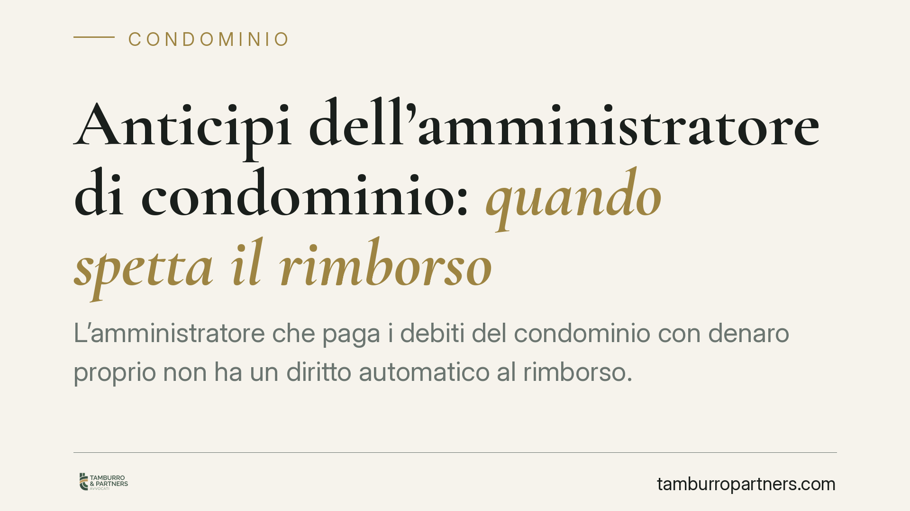

Anticipi dell'amministratore di condominio: quando spetta il rimborso
L'amministratore che paga i debiti del condominio con denaro proprio non ha un diritto automatico al rimborso. Una recente pronuncia della Cassazione lega il recupero delle somme anticipate alla tenuta di una contabilità regolare e all'uso del conto corrente condominiale. In mancanza, l'anticipazione resta a carico dell'amministratore e può incidere persino sul compenso.

Il caso
Un amministratore sosteneva di aver pagato di tasca propria alcuni debiti del condominio e chiedeva di essere rimborsato. La contabilità, però, era irregolare e le somme non erano transitate dal conto corrente intestato al condominio. La Corte di Cassazione (sent. n. 4904/2026) ha negato il rimborso, affermando un principio tanto semplice quanto rigoroso: senza prova documentale dell'anticipo e del suo transito sul conto condominiale, non c'è diritto al recupero.
Inquadramento normativo
Il fondamento del diritto al rimborso sta nel rapporto di mandato tra amministratore e condominio. L'art. 1720 c.c. prevede che il mandante rimborsi al mandatario le anticipazioni sostenute nell'esecuzione dell'incarico. Si tratta però di un diritto condizionato alla prova: chi chiede il rimborso deve dimostrare di aver effettivamente anticipato somme nell'interesse del mandante (art. 2697 c.c., sull'onere della prova).
Qui entra in gioco l'art. 1129 c.c. Il comma 7 impone all'amministratore di far transitare le somme ricevute dai condomini e quelle erogate per conto del condominio su uno specifico conto corrente, postale o bancario, intestato al condominio. Questa regola non è un adempimento formale: è lo strumento che rende tracciabili e verificabili i movimenti di cassa. Quando l'amministratore paga con denaro personale aggirando il conto dedicato, viene meno proprio la tracciabilità che consentirebbe di provare l'anticipo. L'inadempimento contabile, in altri termini, si traduce in impossibilità di dimostrare il credito.
Il nodo del compenso professionale
Un secondo profilo riguarda il compenso. Secondo l'orientamento espresso dalla pronuncia, la grave irregolarità nella tenuta della contabilità può riflettersi anche sulla spettanza del corrispettivo dell'amministratore. Non si tratta di una regola automatica — la perdita del compenso non discende da ogni inesattezza contabile — ma di una valutazione legata alla gravità dell'inadempimento rispetto agli obblighi del mandato. L'amministratore che non rende correttamente il conto non adempie a un'obbligazione centrale dell'incarico, e ciò può incidere sul diritto a essere pagato per la prestazione.
*Il principio di fondo resta questo: ciò che non si prova non si rimborsa.*
Implicazioni pratiche
Per l'amministratore la pronuncia alza l'asticella della diligenza contabile. Pagare debiti condominiali con fondi propri, anche in buona fede e per risolvere una situazione urgente, non garantisce il recupero delle somme se l'operazione non è documentata e non passa dal conto condominiale. L'anticipazione informale, priva di riscontri, rischia di restare definitivamente a carico di chi l'ha effettuata.
Per i condomini il messaggio è speculare: la contabilità regolare e l'uso del conto dedicato sono strumenti di controllo. Un rendiconto chiaro consente di verificare ogni entrata e uscita e di contestare richieste di rimborso non supportate da prova.
Cosa fare in concreto
Per l'amministratore:
- Utilizza sempre il conto corrente condominiale per entrate e uscite, come richiede l'art. 1129, comma 7, c.c.
- Documenta ogni anticipazione con quietanze, fatture e giustificativi, indicando la causale e il collegamento con la spesa condominiale.
- Evita pagamenti con denaro personale salvo necessità documentata, provvedendo poi a regolarizzare l'operazione nella contabilità e nel rendiconto.
Per il condomino:
- Esamina il rendiconto annuale verificando la corrispondenza tra movimenti di cassa ed estratti conto del condominio.
- Richiedi la documentazione di supporto prima di approvare il rimborso di anticipi dichiarati dall'amministratore.
In presenza di anticipi già effettuati e non documentati, è opportuno ricostruire quanto prima la tracciabilità delle operazioni, recuperando giustificativi ed estratti conto, così da sostenere un'eventuale richiesta di rimborso. Ogni situazione va valutata sulla concreta documentazione disponibile.
---
Contributo informativo a cura di Tamburro & Partners Avvocati – Avv. Giuseppe Tamburro. Non costituisce parere legale.
Ogni condominio ha una storia a sé.
Se gestisci un'amministrazione e vuoi un confronto su una specifica questione condominiale, scrivi allo studio. Ti rispondiamo entro un giorno lavorativo.